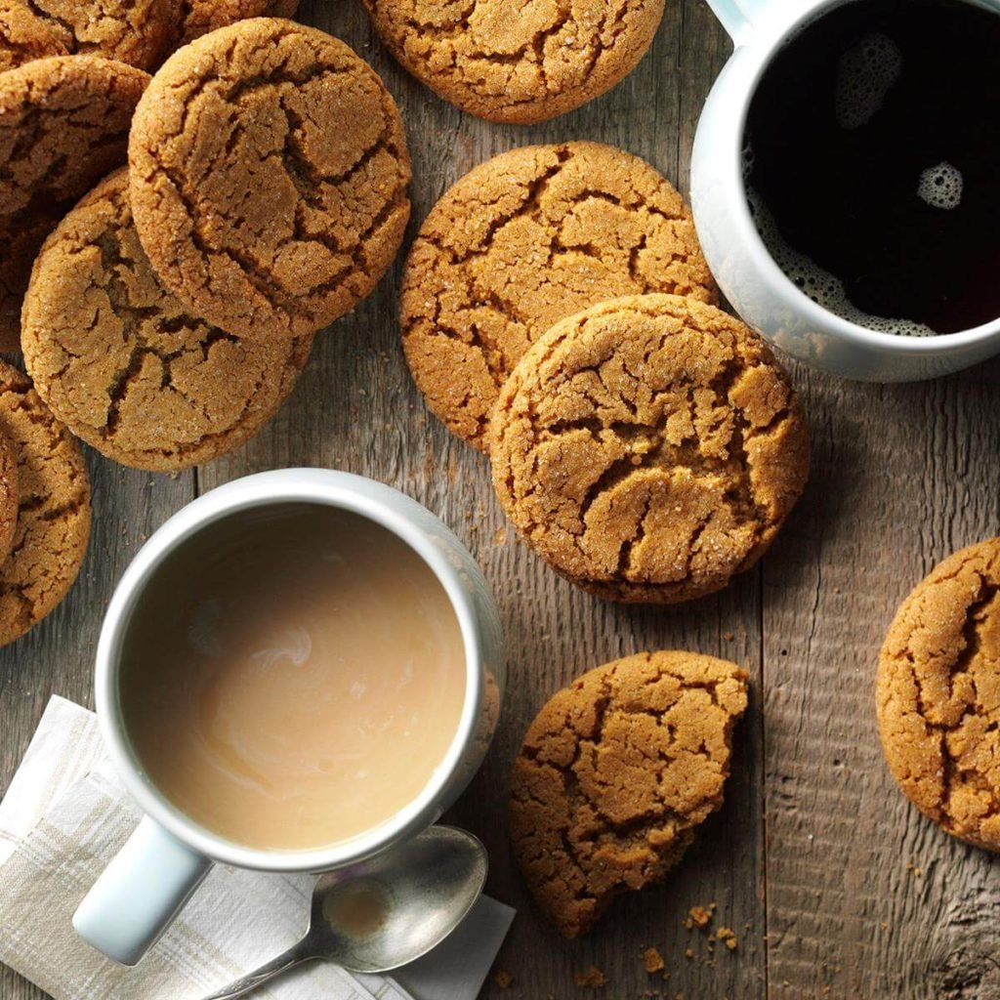

Big Soft Ginger Cookies
Ingredients
3/4 cup butter, softened
1 cup sugar
1 large egg
1/4 cup molasses
2-1/4 cups all-purpose flour
2 teaspoons ground ginger
1 teaspoon baking soda
3/4 teaspoon ground cinnamon
1/2 teaspoon ground cloves
1/4 teaspoon salt
Additional sugar
Directions
- In a large bowl, cream butter and sugar until light and fluffy. Beat in egg and molasses. Combine the flour, ginger, baking soda, cinnamon, cloves and salt; gradually add to the creamed mixture and mix well.
- Roll into 1-1/2-in. balls, then roll in sugar. Place 2 in. apart on ungreased baking sheets. Bake at 350° until puffy and lightly browned, 10-12 minutes. Remove to wire racks to cool.
Nutrition Facts
1 cookie: 111 calories, 5g fat (3g saturated fat), 19mg cholesterol, 98mg sodium, 16g carbohydrate (8g sugars, 0 fiber), 1g protein.
Total Time
Prep: 20 min. Bake: 10 min./batch